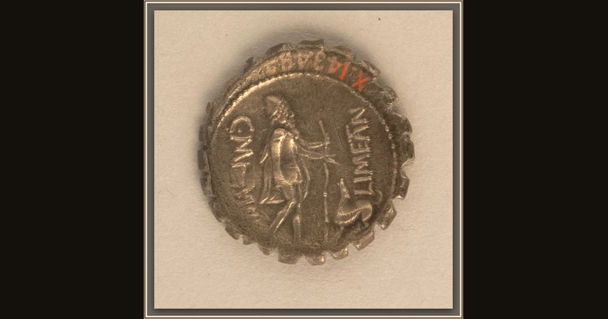

Silver denarius serratus of Mamilius Limetanus
Roman · 82 BCE · The Metropolitan Museum of Art · New York, USA
On the reverse of this Roman coin, the Met identifies Odysseus beside Argus, the old dog who recognizes him beneath his disguise. The worn silver preserves one of the poem’s quietest homecomings. Explore its place in Book XVII of the Odyssey.